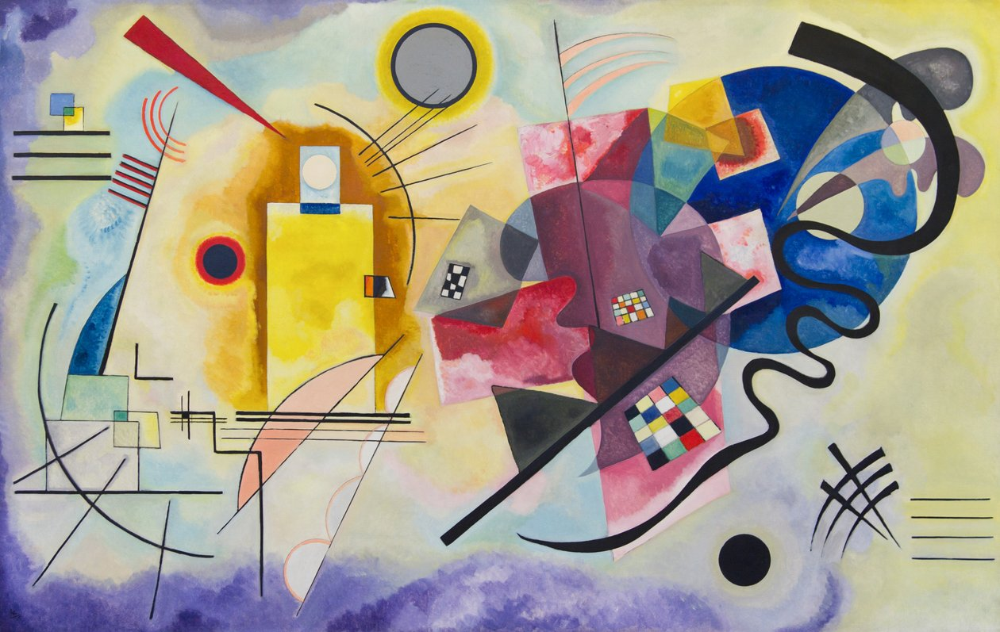

Este tipo de composición visual no se basa en la simetría se fundamenta en el equilibrio de los pesos
visuales El color, el tamaño y la posición de las formas posibilitan la creación de un
equilibrio asimétrico

En en esta obra de Kandinsky y en el ejemplo de la trivia, ambos lados de la imagen tienen el mismo tamaño
El lado izquierdo es estático pero más interesante en cuanto a color y contraste, mientras que el lado derecho es más dinámico pero algo monótono